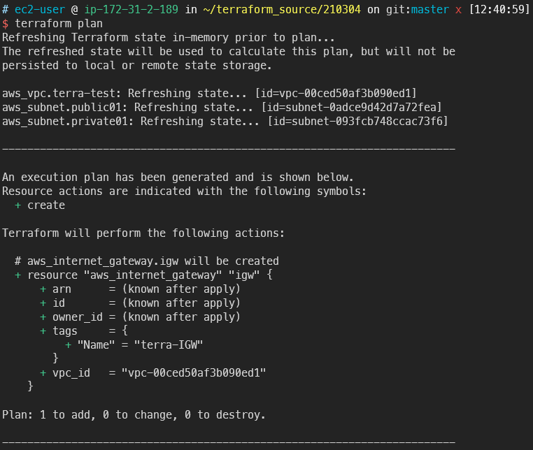

Terraform deploy VPC
목표
- 서브넷이 public인지 private인지 결정하는 것은 IGW유무입니다
- terraform을 이용해 IGW와 NAT Gateway를 생성봅니다
- 네트워크 트래픽의 Destination을 알려주는, 이정표 역할을 하는 라우팅 테이블을 작성합니다
- 라우트테이블은 생성 후 association(=매핑)을 진행합니다. Terraform으로 이를 구현해봅니다
deploy IGW, NAT
- 이전에 작성했던 vpc.tf에 이어서 작업합니다
vi vpc.tf
resource "aws_internet_gateway" "igw" {
vpc_id = aws_vpc.terra-test.id
tags = {
Name = "terra-IGW"
}
}
- 작성했으면 플랜 명령으로 확인합니다
terraform plan
-
플랜으로 확인한 예상작업이 의도한대로 IGW를 추가합니다

-
인프라에 적용합니다
terraform apply
-
이어서 NAT Gateway를 한 개 작성합니다
NAT Gateway는 EIP가 필요하기 때문에 반드시 같이 작성합니다
NAT Gateway는 public 서브넷에 존재해야 함을 생각하고 작성합니다
vi VPC.tf
resource "aws_eip" "terraEIP" {
vpc = true
lifecycle {
create_before_destroy = true
}
}
resource "aws_nat_gateway" "nat" {
allocation_id = aws_eip.terraEIP.id
subnet_id = aws_subnet.private01.id
tags = {
Name = "terra_NAT"
}
}
-
terraform plan을 이용하면 이번에도 잘 작성되었습니다

-
바로 적용합니다. 다만 NAT Gateway 생성은 다른 리소스에 비해 많은 시간이 소모됩니다
terraform apply

-
NAT Gateway가 잘 생성된 것을 콘솔에서도 확인할 수 있습니다

-
NAT Gateway는 존재만으로도 비용이 발생하기 떄문에 사용하지 않으면 바로 삭제합니다
- 테라폼에서 생성한 인프라를 전부 날리는 명령어는 다음과 같습니다
terraform destroy
- NAT Gateway만 삭제하려는 경우 NAT Gateway를 주석처리하고 업데이트 하면 됩니다
terraform apply
build Route-table
- 바로 코드 수정에 들어갑니다
vi vpc.tf
- 두 개의 라우팅 테이블을 작성합니다
resource "aws_route_table" "public"{
vpc_id = aws_vpc.terra-test.id
tags = {
Name = "terra_public_rt"
}
}
resource "aws_route_table" "private"{
vpc_id = aws_vpc.terra-test.id
tags = {
Name = "terra_private_rt"
}
}

- plan 해보고 문제 없으면 바로 생성합니다
terraform apply
-
잘 생성되었습니다

Association
- 이제 어소시에이션을 시작합니다
vi vpc.tf
- 어소시에이션을 작성합니다
서브넷id와 라우팅테이블id가 필요합니다
resource "aws_route_table_association" "public_association"{
subnet_id = aws_subnet.public01.id
route_table_id = aws_route_table.public.id
}
resource "aws_route_table_association" "private_association" {
subnet_id = aws_subnet.private01.id
route_table_id = aws_route_table.private.id
}
-
plan에 문제가 없으면 바로 생성을 시작합니다

-
생성쓰
terraform apply
-
라우팅테이블이 서브넷에 각각 알맞게 매핑되었습니다


make Routing Rule
- 일단 여기다 그냥 작성합니다
vi vpc.tf
- 퍼블릭용 라우팅테이블 내에서 라우팅을 선언할 수도 있습니다(inner rule)
route {
cidr_block = "0.0.0.0/0"
gateway_id = aws_internet_gateway.igw.id
}

- 콘솔에서 Public Routing table에 IGW가 연결된 것을 확인할 수 있습니다
이제 public subnet은 인터넷 사용이 가능해졌습니다

- 이번엔 inner rule이 아닌 바깥에서 rule을 생성합니다
vi vpc.tf
- 다음과 같이 private route table에 NAT 게이트웨이를 부착합니다
resource "aws_route" "private_nat" {
route_table_id = aws_route_table.private.id
destination_cidr_block = "0.0.0.0/0"
nat_gateway_id = aws_nat_gateway.nat.id
}
-
plan후 잘 작성되었으면 바로 apply 합니다

-
private route table에 NAT 게이트웨이가 잘 붙었습니다